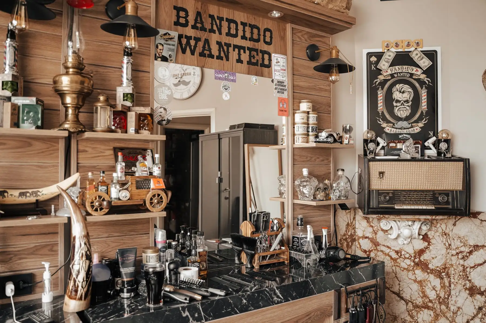
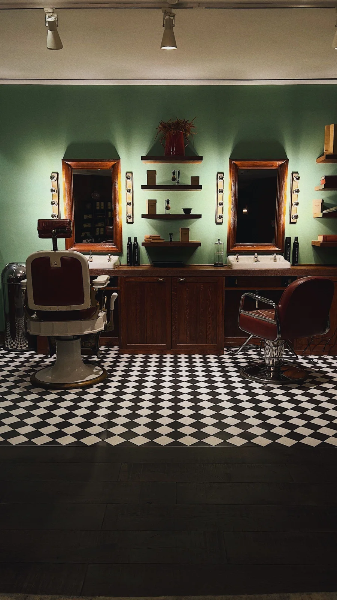

A good cut.
A better ritual.
A familiar chair. A proper conversation.
A haircut that feels like you.
Not a whole new you.
Just a fresh start.
Bring a photo, talk through the length, or ask what works with your hair. Start with a conversation. Finish with a look you can live in.
Keep it
simple.
Cut it well.
Illustrative prices and appointment lengths.
No appointments available in this sample.
The haircut
$4545 minutes / Scissor or clipper cut. Wash and finish.
Skin fade
$5050 minutes / Close at the sides, shaped on top.
Beard tidy
$2520 minutes / Shape, trim and clean lines.
Cut + beard
$6560 minutes / The full chair time.
Good company.
Sharp scissors.
A place for a trim, a reset, and a little time out of the day.

Less rush. More ritual.
Your hair. Your chair. Your call.
The short
answers.
Can I bring a reference photo?
Yes. A front and side view help explain the shape and length you want.
What if I am not sure what to book?
For a real shop, call first and describe your hair and the cut you have in mind. The sample phone number is fictional.
Does this page take appointments?
Not yet. This is a design concept. A live version would connect directly to the shop’s booking calendar.
Your next
neighborhood stop.
Williamsburg neighborhood
Sample hours: Tue–Fri, 10am–7pm
Sat, 9am–6pm · Sun, 10am–4pm
Illustrative neighborhood map · not a business address